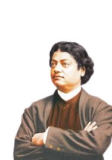

swamivivekanand
swamivivekanand
Birth and Early life
Swami Vivekananda was born on January 12, 1863, in Kolkata (formerly Calcutta), India, into a well-educated, affluent family. His birth name was Narendranath Datta, and he was the eldest of nine siblings. His father, Vishwanath Datta, was a lawyer, and his mother, Bhuvaneshwari Devi, was a deeply religious woman. Narendranath grew up in an intellectually stimulating environment, with exposure to both Western philosophy and Indian spirituality. His early life was marked by a deep curiosity and a quest for truth.
Education
Vivekananda was a bright student from childhood, excelling in both academic subjects and extracurricular activities. He studied at the Metropolitan Institution and later at the Scottish Church College in Kolkata, where he came into contact with Western philosophy, science, and religion. He was particularly influenced by the works of Immanuel Kant, John Stuart Mill, and the teachings of Raja Yoga. However, his true spiritual education began under the guidance of his guru, Sri Ramakrishna Paramahamsa, who profoundly impacted his life and vision. Vivekananda’s intellectual depth and spiritual insight made him one of the foremost scholars and spiritual leaders of his time.
Marriage(unmarried but devoted)
Swami Vivekananda did not marry, as he chose a life of renunciation and spiritual pursuit. During his early years, there were suggestions by his family for him to marry, but he remained resolute in his decision to dedicate his life to the service of humanity and the realization of higher spiritual truths. His intense devotion to the spiritual path and his desire to lead a life of renunciation made marriage inconceivable for him. Instead, his relationship with his guru, Sri Ramakrishna, and his spiritual mission became his life’s purpose. Vivekananda believed that the true purpose of life was to realize one's divine nature and serve the nation and humanity, rather than following conventional social norms.
Death
Swami Vivekananda passed away on July 19, 1902, at the age of 39. His death was sudden and unexpected, leaving a deep void in the spiritual and intellectual landscape of India. He had been in a period of intense spiritual activity and public work, having delivered countless lectures and established the Ramakrishna Mission to carry forward the teachings of his guru. Vivekananda's death at a young age was seen as a great loss, but his teachings continue to inspire millions across the world. He was known for his visionary ideas on spirituality, education, and social reform. His final words, "You have to grow from the inside out," reflect his enduring philosophy of self-realization and inner strength.